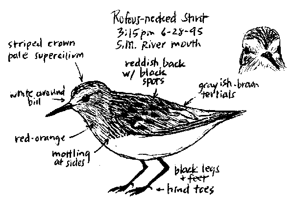

|  |
|
Figure 1. Red-necked Stint, Calidris ruficollis (1995-083), Santa Maria River estuary, Santa Barbara Co., 28 June 1995. This adult in alternate plumage was believed to be the same individual at this location the previous year. Sketch by Jamie M. Chavez |